ollama pull qwen2.5:3b4.1 Laboratório Prático 1: Recuperação Contextual e Predição de Dados Institucionais com Agente IA com R
Análise e Objetivo Geral
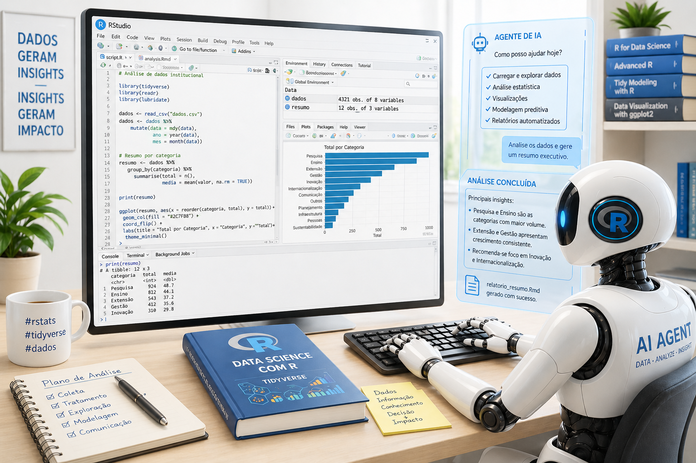
Este laboratório prático tem como objetivo capacitar o usuário na automação do tratamento, enriquecimento e recuperação de dados omissos em bases de dados públicas e institucionais, como por exemplo: gênero, faixa etária, classificações, categorias, dados residenciais, região geográfica, pontuações, estimativas de valores, validação de documentos, padronização de campos e inferência de informações ausentes a partir de dados existentes.
Neste laboratório nós demonstramos como realizar a predição de gênero a partir do nome completo do estudante. A maior vantagem de um modelo de linguagem (LLM) instalado localmente. Ao rodar o modelo no seu computador, os dados (como os nomes dos discentes da sua planilha) nunca saem da sua máquina.
Utilizando os microdados de discentes ingressantes do Portal de Dados Abertos da UNIFESP (2026), demonstraremos como projetar um fluxo ponta a ponta na linguagem R (ambiente RStudio), integrando inteligência artificial local para resolver problemas de incompletude cadastral sem comprometer a governança dos dados.
Ao executar o agente de IA em seu computador institucional, as informações (como os nomes dos discentes e outros dados em sua planilha) permanecem na sua máquina e não são enviadas para servidores externos (como OpenAI ou Google), evitando o compartilhamento de dados sensíveis, isto simplifica bastante a conformidade com a Lei Geral de Proteção de Dados, uma vez que não ocorre transferência internacional de dados. Além disso, por rodar localmente, o modelo não requer chaves de API, não envia dados à internet e elimina custos com assinaturas ou serviços pagos. :::
Pré requisitos
Para garantir o desempenho ideal e a compatibilidade com as ferramentas mencionadas, certifique-se de que seu hardware atende às seguintes especificações:
Sistema Operacional: Windows 10 ou Windows 11 (versões de 64 bits recomendadas).
Arquitetura: Processador x64 ou ARM64.
Permissões: Acesso de nível administrativo para instalação de software e execução de comandos via terminal (CMD/PowerShell).
Conhecimentos básicos na linguagem R e RStudio.
Pelo menos 2,0 GB de espaço em disco do computador, devido o modelo qwen2.5:3b no Ollama.
📋 Praticidade: Copiando os Códigos
Não é necessário selecionar o texto dos blocos de código manualmente. No canto superior direito de cada caixinha de código (chunk), existe um ícone de prancheta invisível que aparece ao passar o cursor do mouse. Basta clicar nele para copiar todo o script diretamente para a sua área de transferência.
1° Passo: Instalação do RStudio
Para instalar o RStudio Desktop através do site oficial da Posit ou Posit (2026), você deve seguir estes dois passos essenciais para instalação da versão mais atual:
Instalar o R (O Motor): Clique no botão “Download and Install R”. Isso o levará ao site do CRAN. Escolha seu sistema operacional e baixe a versão mais recente. Sem o R, o RStudio não funcionará.
Instalar o RStudio (A Interface): Após instalar o R, volte à página da Posit e clique no botão “Download RStudio Desktop for [Seu Sistema]”. Execute o instalador e siga as instruções padrão.
2° Passo: Obtendo seu modelo LLM local
Para instalar o Ollama no Windows localmente através do site oficial https://ollama.com/download/windows ou Ollama (2026a):
Assista também o VÍDEO para auxiliar na instalação: ▶️ https://youtu.be/VMS0ZLPRcEc
Download: Acesse o link e clique no botão de Download for Windows.
Instalação: Execute o arquivo OllamaSetup.exe. O processo é automático e, ao finalizar, o ícone do Ollama aparecerá na sua barra de tarefas (perto do relógio).
Após concluir a instalação do Ollama, siga os passos abaixo para configurar seu primeiro modelo de linguagem local (LLM):
- Seleção do Modelo:
Acesse https://ollama.com/library ou Ollama (2026b) para explorar os modelos disponíveis.
No campo de busca, procure por qwen2.5, por ser um modelo bastante eficiente conforme Yang et al. (2024).
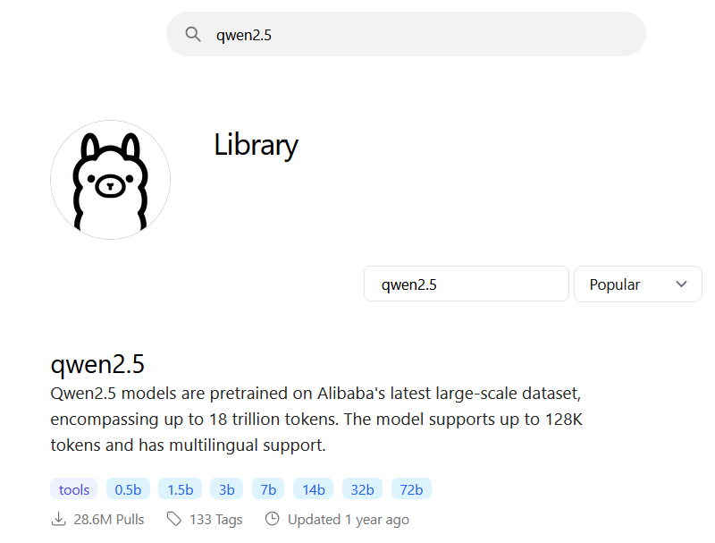
Notas Gerais
A Qwen2 supera a maioria dos modelos anteriores de peso aberto, incluindo seu antecessor Qwen1.5, e exibe desempenho competitivo em relação a modelos proprietários em diversos benchmarks sobre compreensão de linguagem, geração, proficiência multilíngue, codificação, matemática e raciocínio, conforme resumo de Yang et al. (2024).
Em seguida na seção Models, localize qwen2.5:3b.
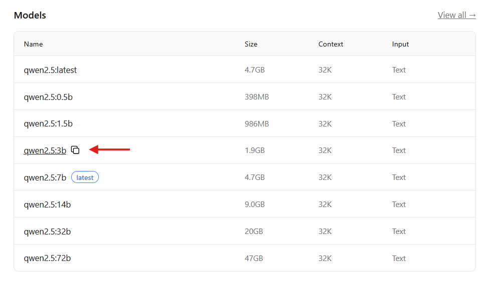
Clique sobre o modelo desejado e copie o nome exato exibido na seção principal.
- Preparação do Ambiente:
Abra o Prompt de Comando (CMD) ou o PowerShell através da barra de busca do Windows. Como podemos observar na figura a seguir:
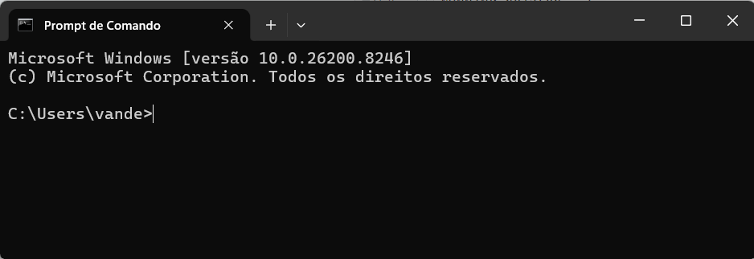
- Download e Execução:
O Qwen 2.5 (3b) é uma versão extremamente leve e rápida, ideal para tarefas simples como identificar gênero, pois não exige tanto do processador do seu computador. Para baixar o modelo, digite o seguinte comando:
Como podemos observar na figura a seguir:
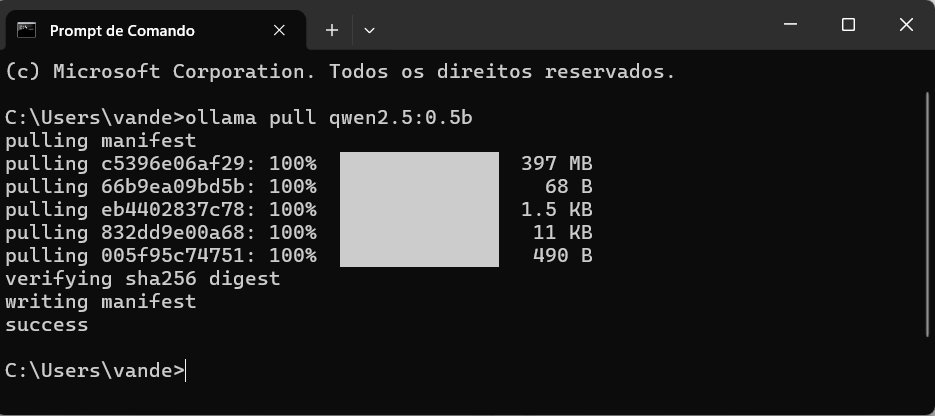
Aguarde a conclusão do download. O Ollama iniciará automaticamente uma interface de chat no terminal assim que terminar.
- Gerenciamento e Verificação:
Listar modelos: Para visualizar todos os modelos já instalados no seu computador, utilize:
ollama listComo podemos observar na figura a seguir:
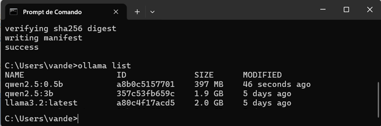
Testar instalação: Caso já tenha baixado o modelo, basta executar o comando:
ollama run qwen2.5:3bComo podemos observar na figura a seguir:
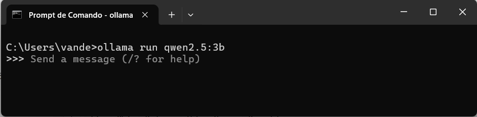
Se o cursor de texto (prompt) aparecer pronto para receber perguntas, a instalação local foi concluída com sucesso.
- Encerrando a Sessão:
Para sair do chat e retornar ao terminal padrão, digite:
/byeComo podemos observar na figura a seguir:
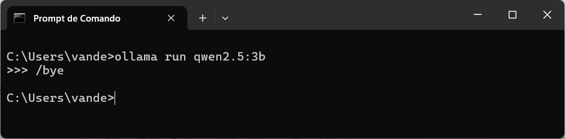
Dica: Para utilizar qualquer outro modelo (como Llama 3 ou Mistral), basta repetir o processo de busca no site da Ollama https://ollama.com/library e substituir o nome do modelo nos comandos acima.
3° Passo: Importanto a base de dados do Portal de Dados Abertos
Acesse o Portal de Dados Abertos através do https://dados.gov.br/dados/conjuntos-dados/discentes-ingresso-e-cursos ou Brasil (2026).
Navegue até a aba Recursos.
Localize o arquivo no formato XLS e clique no botão “Acessar o recurso” para iniciar o download.
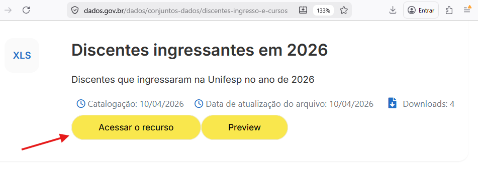
Para organizar seu ambiente de trabalho, mova o arquivo baixado da pasta Downloads para o diretório: C:\guiaagenteia\, utilizando os atalhos CTRL + X e CTRL + V.
4° Passo: Preparando o ambiente de programação do Script no RStudio
Com o RStudio aberto, vamos criar o arquivo onde seu código será executado. Vá ao menu File (Arquivo), selecione New File (Novo Arquivo) e clique em “R Script”, nomeia e salve,entrando e File, depois “Save As…” este novo arquivo na sua pasta de preferencia: C:\guiaagenteia\, com o seguinte nome: primeiroagenteia.R e com a extensão R (*.R).
Na caixa de edição que surgirá, digite ou cole as instruções a seguir para iniciar a programação do agente de IA.
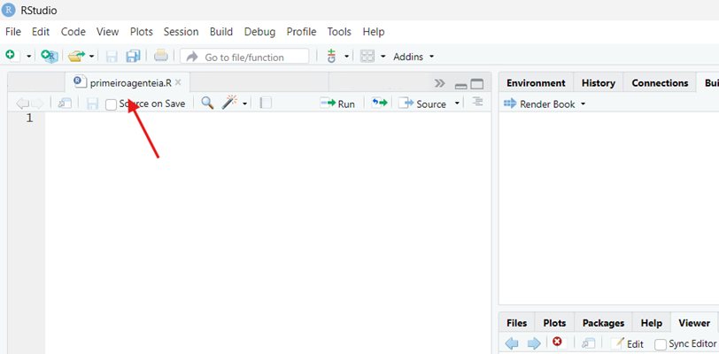
5° Passo: Identificando as bibliotecas necessárias
As “bibliotecas” (ou pacotes) são conjuntos de funções extras que estendem a capacidade do R. Para este projeto, utilizaremos ferramentas para leitura de Excel, manipulação de dados e conexão com modelos de IA.
# Conexão com LLMs (IA)
if (!require("ellmer")) install.packages("ellmer")
library(ellmer)
# Manipulação e limpeza de dados
if (!require("dplyr")) install.packages("dplyr")
library(dplyr)
# Leitura de arquivos Excel (.xls, .xlsx)
if (!require("readxl")) install.packages("readxl")
library(readxl)
# Exportação de dados para Excel
if (!require("writexl")) install.packages("writexl")
library(writexl)6° Passo: Acessando a planilha de dados
Agora que o ambiente está pronto, vamos “trazer” os dados da sua pasta no computador para dentro do RStudio. Para isso, criaremos um objeto chamado df (abreviação de Data Frame, que é como o R chama as tabelas).
# Importando os dados do diretório local
df <- read_excel("C://guiaagenteia//ingressantes-2026.xls")7° Passo: Identificação do nome das colunas
Antes de processar as informações, você precisa conhecer o “esqueleto” da sua planilha. No R, temos comandos rápidos que nos permitem espiar o conteúdo sem precisar abrir o arquivo no Excel.
# Útil para identificar o nome exato da coluna que contém os nomes dos alunos.
print(colnames(df))
# Ideal para conferir se os dados foram importados corretamente (acentuação, números, etc).
head(df)8° Passo: Configurando o Chat com a IA
Este passo é um dos mais importantes, pois é aqui que você configura o “cérebro” da Inteligência Artificial que irá analisar seus dados. No R, estamos criando uma conexão direta com o Ollama que você instalou.Nesta etapa, criamos um objeto chamado chat.O System Prompt define as regras de negócio, o comportamento e as restrições.
# A forma correta de passar a temperatura no ellmer para Ollama:
chat <- chat_ollama(
model = "qwen2.5:3b",
system_prompt = "Você é um classificador rígido de gênero baseado em nomes brasileiros e estrangeiros.
Sua única função é retornar exatamente uma palavra, sem explicações.
Regras obrigatórias:
- Retorne APENAS: Masculino ou Feminino
- SEM pontuação, SEM explicação, SEM espaços extras
- Baseie-se no primeiro nome para classificar
- Em caso de dúvida, use o primeiro nome como referência principal."
) 9º Passo: Criando o Agente Inteligente
A função agente_identificador_genero_ia funciona como um pequeno robô especializado somente em gênero:
# Definir a função do agente
agente_identificador_genero_ia <- function(nome_aluno) {
# O Filtro de Segurança (Prevenção de Erros)
if (is.na(nome_aluno) || trimws(nome_aluno) == "") {
return("Indefinido")
}
# A "Pergunta" Personalizada (Prompt)
prompt <- paste0(
"Com base no nome completo'", nome_aluno,
"', identifique o gênero e responda apenas uma única palavra: 'Masculino' ou 'Feminino'."
)
resposta <- tryCatch({
# A Execução do Chat
chat$chat(prompt)
}, error = function(e) {
# Em caso de erro técnico, logamos no console e retornamos um aviso
message("Erro no processamento do nome [", nome_aluno, "]: ", e$message)
return("Erro de Processamento")
})
# 4. Retorno Final
return(as.character(resposta))
}10º Passo: Processando a Base de Dados com a IA
Este bloco de código é responsável por aplicar o seu agente de Inteligência Artificial a cada linha da planilha da UNIFESP.
# seleção dos 10 primeiros nomes da tabela
df_selecao <- df %>% head(10)
#df_selecao <- df
# Criando a Nova Coluna (mutate)
df_resultado <- df_selecao %>%
rowwise() %>%
mutate(genero = agente_identificador_genero_ia(nome)) %>% # Ajuste 'Nome' conforme sua coluna
ungroup()11° Passo: Visualização e Validação do Resultado
Conferência final do processamento realizado pela Inteligência Artificial, você precisa visualizar o resultado para garantir que a automação funcionou conforme o esperado.
# Visualização e Validação do Resultado
print(df_resultado)12º Passo: Exportação dos Resultados
Aqui, estamos utilizando duas funções para salvar a mesma tabela em formatos diferentes.
# Exportar o resultado em formato CSV
write.csv(df_resultado, "C://guiaagenteia//planilha_com_resultado.csv")
# Exportar o resultado em formato Excel
write_xlsx(df_resultado, "C://guiaagenteia//planilha_com_resultado.xlsx")13º Passo: Executando o código do Agente de IA
Importante: Antes de prosseguir salve seu arquivo primeiroagenteia.R como Ctrl + S ou no menu: File->Save.
Para processar o código, selecione a linha desejada e utilize um dos métodos abaixo:
Interface Visual: Clique no botão Run no topo do painel de script.
Atalho de Teclado: Ctrl + Enter (mais rápido e produtivo).
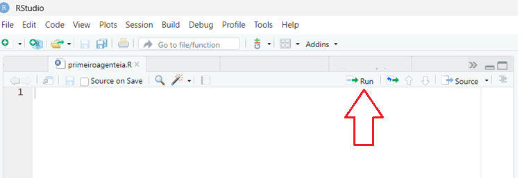
14º Passo (Opcional): Monitoramento de Desempenho (Cronômetro)
Este código opcional, que pode ser substituido no passo 10°, funciona como um cronômetro digital. Ele não altera o resultado dos dados, mas serve para você saber exatamente quanto tempo a IA levou para processar a sua lista de discentes da UNIFESP.
# Iniciar o cronômetro
inicio <- Sys.time()
message("Iniciando processamento às: ", inicio)
df_resultado <- df_selecao %>%
rowwise() %>%
mutate(genero = agente_identificador_genero_ia(nome)) %>% # Ajuste 'Nome' conforme sua coluna
ungroup()
# Exibir resultados
#print(df_resultado)
fim <- Sys.time()
tempo_total <- fim - inicio
cat("\n--- Resumo de Performance ---\n")
message("Tempo final: ", fim)
message("Duração total: ", round(tempo_total, 2), " ", units(tempo_total))Resultados Esperados após execução do agente de IA
Dois arquivos com os dados originais, acrescidos da nova coluna genero:
- 📄
planilha_com_resultado.csv - 📊
planilha_com_resultado.xlsx
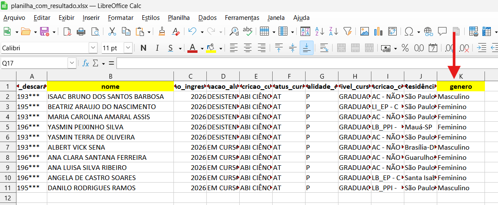
📂 Download das planilhas
Para consultar as saídas prováveis das planilhas gerados pelo agente, você pode fazer o download direto dos arquivos de exemplo através do repositório oficial do projeto:
📂 Download do Código Fonte do Primeiro Laboratório
Para consultar o código fonte, você pode fazer o download direto do arquivo de exemplo através do repositório oficial do projeto: